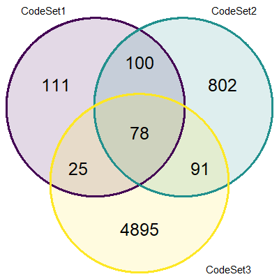
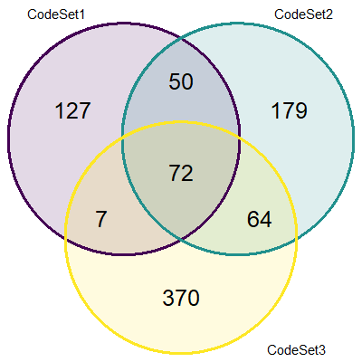

2 Methods
2.1 Data Processing
Normalizing CS2 to CS3 can easily follow the PrOType method for HGSC subtypes because both CodeSets have pool samples. A different technique is implemented when normalizing CS1 to CS3 where we use common samples and genes as reference sets.
2.1.1 Raw Data
There are 3 NanoString CodeSets:
- CS1: OvCa2103_C953
- Samples = 412
- Genes = 275
- CS2: PrOTYPE2_v2_C1645
- Samples = 1223
- Genes = 384
- CS3: OTTA2014_C2822
- Samples = 5424
- Genes = 532
These datasets contain raw counts extracted straight from NanoString RCC files.
2.1.2 Housekeeping Genes
The first normalization step is to normalize all endogenous genes to housekeeping genes (POLR1B, SDHA, PGK1, ACTB, RPL19; reference genes expressed in all cells). We normalize by subtracting the average log2 housekeeping gene expression from the log2 endogenous gene expression. The updated CodeSet dimensions are now:
- CS1: OvCa2103_C953
- Samples = 412
- Genes = 256
- CS2: PrOTYPE2_v2_C1645
- Samples = 1223
- Genes = 365
- CS3: OTTA2014_C2822
- Samples = 5424
- Genes = 513
The number of genes are reduced by 19: 5 housekeeping, 8 negative, 6 positive (the latter 2 types are not used).
2.1.3 Common Samples and Genes
Since the reference pool samples only exist in CS2 and CS3, we need to find an alternative method to normalize all three CodeSets. One method is to select common samples and common genes that exist in all three. We found 72 common genes. Using the summaryID identifier, we also found 78 common summary IDs, translating to 320 samples. The number of samples that were matched to each CodeSet differed:
- CS1: OvCa2103_C953
- Samples = 93
- Genes = 72
- CS2: PrOTYPE2_v2_C1645
- Samples = 87
- Genes = 72
- CS3: OTTA2014_C2822
- Samples = 140
- Genes = 72
2.1.3.1 Overlap of common samples by summary ID

2.1.3.2 Overlap of common genes

*Excluding housekeeping genes and controls
2.1.4 CS1 Training Set Generation
We use the reference method to normalize CS1 to CS3.
- CS1 reference set: duplicate samples from CS1
- Samples = 25
- Genes = 72
- CS3 reference set: corresponding samples in CS3 also found in CS1 reference set
- Samples = 20
- Genes = 72
- CS1 validation set: remaining CS1 samples with reference set removed
- Samples = 387
- Genes = 72
The final CS1 training set has 304 samples on 72 genes after normalization and keeping only the major histotypes of interest.
2.1.5 CS2 Training Set Generation
We use the pool method to normalize CS2 to CS3 so we can be consistent with the PrOType normalization when there are available pools.
- CS2 pools:
- Samples = 9 (Pool 1 = 3, Pool 2 = 3, Pool 3 = 3)
- Genes = 365
- CS3 pools:
- Samples = 22 (Pool 1 = 12, Pool 2 = 5, Pool 3 = 5)
- Genes = 513
- CS2 validation set: CS2 samples with pools removed
- Samples = 1214
- Genes = 365
The final CS2 training set has 945 samples on 136 (common) genes after normalization and keeping only the major histotypes of interest.
2.2 Classification
We use 6 classification algorithms and 4 subsampling methods across 500 repetitions in the supervised learning framework for CS1 and CS2. The pipeline was run using many SGE batch jobs as a way of parallelization on a CentOS 5 server. Implementations of the techniques below were called from the splendid package.
- Classifiers:
- Random Forest
- Adaboost
- XGBoost
- LDA
- SVM
- K-Nearest Neighbours
- Subsampling:
- None
- Down-sampling
- Up-sampling
- SMOTE